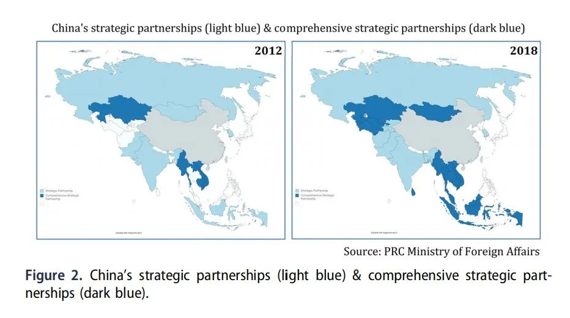
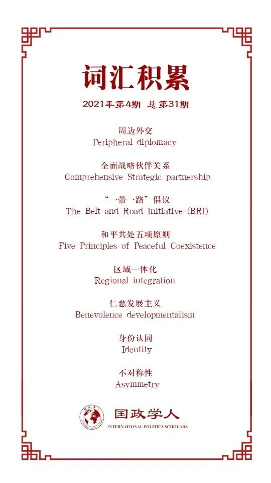

收录于合集

作品简介
【作者】 Stephen N. Smith（斯蒂芬·史密斯），卡尔顿大学政治学系的博士研究生，研究方向为国际关系和比较政治。攻读博士学位期间，斯蒂芬主要研究在中国崛起的背景下，中国国际关系理论的发展、中国的国际秩序观和中国的对外关系。
【编译】 朱忻博（国政学人编译员，爱丁堡大学国际关系硕士）
【校对】 张鸿儒、杨朔
【审核】 徐一君
【排版】 韩柯
【美编】 杜丛竹
【来源】 Smith, Stephen N. (2021). Harmonizing the periphery: China’s neighborhood strategy. Pacific Review , 34(1), 56-84.
【归档】 《国际关系前沿》2021年第4期，总第31期。
期刊简介
《太平洋评论》（The Pacific Review）是太平洋地区研究的主要平台，作为跨学科期刊，其宗旨和目标为打破研究领域之间以及学术界、新闻界、政府和商界之间的壁垒，重点关注政策问题。2019年该刊的影响因子为1.633，在区域研究类SSCI期刊中排名11/77，在国际关系类SSCI期刊中排名第35/95。
和谐周边：新时代中国周边战略
Harmonizing the periphery: China’s neighborhood strategy
Stephen N. Smith
内容提要
本文主要探讨了中国的精英人士如何理解中国相对于其“周边”的适当角色，以及这种自我认知如何塑造中国对周边国家的战略政策。作者提出了两个具体的论点：首先，自2012年后，中国开始认识到自己有责任积极塑造周边地区（的秩序）。通过“一带一路”倡议推动的机构建设和区域一体化，加上战略伙伴关系的构建、规范约束和治国方略的发展，中国的周边外交战略从单纯的接触转变为主动塑造地区秩序。其次，处理好与邻国之间新出现的权力不对称是当前中国周边外交政策的一项重要任务。中国主导的新兴地区秩序依赖于等级性的、交易性的和反映地位差异的规范，中国新时代的周边战略建立在一个非对称的交易之上：尊重中国的核心利益以换取其对周边的“仁慈”。
文章导读
01
引言
众多文献研究了中国崛起对国际秩序的影响，但绝大多数都只是关注中国与其他大国的关系，尤其是与美国的关系。然而，这种单一关注大国的结果之一便是，中国与中小国家的关系未能得到充分研究。本文通过观察2012年后的中国周边外交来弥补这一文献上的空白，并指出中共十八大是一个显著的分水岭，此后与较小邻国的关系在北京的整体外交中占据了重要地位。在研究时，本文暂时忽略了地区国家之间的许多重要差异，并把中国的周边国家理解为一个整体单位。此外，本文对观念(ideas)和身份认同(identities)予以重视，而非只关注于全球权力平衡（变化），因为作者认为，对中国周边外交战略制定来说，广义上包括意识形态、（国家）记忆和（国家）地位的身份认同与权力和利益同样重要。 本文提出了两个具体的论点：第一，2012年后，中国开始认识到自己有责任积极塑造周边地区（的秩序）；第二，当前中国与邻国之间的关系以明显的权力不对称为特征，管理这种不对称是中国新周边政策的关键任务。
02
中国周边意识的回归
周边地区长期以来都是中国的世界观的中心，如清朝就将世界划分为三个同心圆——一个由文化上相近的朝贡国组成的大中华区域，一个由非中华文化和民族组成的内部亚洲区域，以及一个由野蛮人组成的外部区域。但19世纪中叶以后随着帝国主义强国的入侵，这一和平的中国中心秩序解体了。在1949年后中国的外交关系中，“周边”是个最近才出现的概念。直到冷战末期，1988年的第七届全国人民代表大会才第一次确定了“周边”的概念。不过对于中国周边地区的范围，官方并没有给出明确定义，学界也有着不同的争论。本文遵循了中国学者的常见用法，对周边地区的范围使用中等程度的理解——包括那些与中国有直接陆地或海上边界的国家，或者被认为在中国的影响范围内足够近的国家。具体来说，中国的“周边外交”包括与14个陆地邻国和6个海上邻国的关系，加上柬埔寨、新加坡、泰国、孟加拉国、斯里兰卡、马尔代夫、乌兹别克斯坦和土库曼斯坦，总共是28个国家。
03
延续和改变
当前中国的周边战略植根于前几届领导层制定的指导方针，之前的三个关键节点对其产生了重要影响。第一个是冷战后期。在中国看来，两极结构的崩溃并没有像美国人所认为的那样开创了“单极”时代，而是开启了多极化趋势（包括美国、俄罗斯、欧洲、日本和中国五个极）。这种世界秩序多极化的趋势表明，随着美国和俄罗斯从亚洲撤退，该地区将越来越多地联合在中国和日本周围。第二个关键节点是2007-2008年的全球金融危机。这场始于资本主义世界中心的危机让美国和欧洲陷入了困境，并对中国自我综合国力的认知产生了深远影响。（金融危机）向中国精英们证实，随着世界走向多极化，全球权力平衡正在从西方向东方转移。中国相对毫发无损地从危机中走出来，激发了人们对“中国模式”新的信心，并相信中国独特的道路比西方自由市场资本主义的经济模式更优越。第三个关键节点是2011年秋，当时奥巴马政府决定增加美国在亚洲的军事、经济和外交资源（即“再平衡”），这一举动让中国官员感到震惊。中国战略家很快得出结论，这是遏制中国的战略，北京的回应是在更广泛的战略中增加周边外交的优先地位。
与此同时，中国在全球权力平衡中的地位发生了巨大变化，这对其决策产生了重要影响。由于崛起获得的大国地位，中国对周边的考量已经从一个仅仅与之接触的地区演变为北京必须积极参与区域治理的地区。作者通过对中共党代会的梳理，发现15到17届党代会对周边国家关系的描述，主要是基于互利和平等关系加强经济合作。到了2012年的十八大，中国开始将自身国家角色定位为对周边小邻居负责任的大国。作者指出2002年以来北京的外交事务有明确的等级制度，即与周边国家的关系低于与美国、俄罗斯和欧盟等其他大国的关系。但近年来，中国与周边国家的关系越来越重要，可以说与其他大国的关系相当。在中国继续重视与大国关系的同时，特别是在中美战略竞争日益加剧的情况下，中小邻国已成为实现其国家发展目标的重要场所。这也与地缘政治趋势相吻合，目前中国的十大贸易伙伴中有六个都在亚洲，如果中美战略竞争持续下去，中国与周边国家的关系将更加重要。
04
中国负责
中国目前重要 通过四个机制来努力塑造周边环境 ：新机构和区域一体化、战略伙伴关系、规范约束、仁慈发展主义（benevolent developmentalism）。
机构建设与区域一体化。 作者认为随着经济的蓬勃发展，北京更愿意在领导地区治理方面发挥积极作用，以展示后美国世界秩序中自身的角色（地位）。如金融领域亚洲基础设施和投资银行（AIIB）和金砖国家新开发银行(NDB)的建立，贸易领域的《区域全面经济伙伴关系协定》（RCEP），都是中国刚刚起步但具有影响力的地区领导作用的证据。2019年，中国成为了联合国预算的第二大贡献国，这反映了世界秩序远离传统西方强国的重大再平衡。并且在民族主义口号下，“中国方案”体现了北京想要在塑造支撑地区秩序的机构和规范中发挥更大的作用的意图。与此同时，中国国内也展开了一种民族叙事，通过回想中华帝国的辉煌历史，中华民族伟大复兴的“中国梦”被提出。“中华民族的伟大复兴”虽然是一个广阔而模糊的概念，但却有非常具体的目标，如“两个一百年”目标。而伴随着这种中国国家角色观念的改变，一系列政策也被提出。如2013年9月开始提出的，后来众所周知的“一带一路”倡议。作者认为虽然解决国内经济挑战是“一带一路”倡议的关键动力，但该倡议的一个长期战略目标是在中国的领导下，更好地将中国周边地区整合成一个整体。
巩固战略合作伙伴关系。 2012-2017年间，中国迅速巩固了与周边国家的外交关系。通过下图1对中国2012年初和2018年底中国外交伙伴关系变化的直观对比，可以看出中国同周边国家深化合作的程度，特别是在中亚和东南亚这两个地区。

图1：中国的战略伙伴（浅蓝）和全面战略伙伴（深蓝）
这种合作也不只是书面上的文字游戏，而是要以具体的政策来深化中国同周边国家的五个联系（“五通”），即政策沟通、设施联通、贸易畅通、资金融通、民心相通。本文指出这些联系可以使该地区与中国更紧密地融合，并重塑周边国家的利益和身份，使其更符合北京的偏好。此外，中国周边战略中经济虽占了突出地位，但一个重要的、可以说是不断增长的军事部分也同样存在。随着北京寻求保护其在世界各地不断扩大的商业利益，中国在世界上追求国家安全的努力将继续下去。
规范性大国。 为了适应大国的角色，北京提出了一套规范的概念来“指导”地区外交。主要是四个基本原则：“友好”（亲)、“真诚”(诚)、“互利”(惠)和“包容”(容）。作者认为，虽然这些原则没有引起广泛注意，但应该被认真对待，因为它们表明了中国的意图，若其被作为地区规范采纳，将会影响中国主导秩序下的合适的行为。
作者指出这些中国定义的原则当然也反映了中国的国家利益。例如，“亲”在周边关系中的一个要素是“守望相助”，本文用冷战后美国定义的“流氓国家”概念作类比来描述这种规范性力量，认为北京可以像美国宣传“流氓国家”一样，使用“守望相助/不守望相助”的方式：那些尊重中国利益的国家是“友好国家”，而那些抵制的国家则不是，并可能会受到惩罚。另一个例子是“容”的概念，这个字的含义相当广泛。其一是每个国家的人民都有选择自身发展道路的权力，即尊重不同的政治经济制度，因此，作为管理中国主导的地区秩序的规范，“包容”（容）鼓励各国对务实合作保持开放，而并不强调共同的价值观。北京优先考虑以自决和主权作为秩序的基础，而非政权类型。除了“包容”这一理解外，“容”也可能意味着“宽容”，以用来管理大国和小国之间不可避免出现的紧张关系。当然这种宽容并不是无限的，正如中国外交部发言人警告过的那样：“小国不应该提出不合理的要求”。然而，宽容作为一种外交规范的出现和推广，表明中国精英阶层认真对待确保周边小国安全感的问题。因为他们发现随着中国崛起，北京在地区不断深化的商业和安全关系将使其成为（周边小国）新的抵抗目标。
仁慈发展主义。 北京的“和平崛起”言论不足以缓解较小国家对其不对称权力增长（的担忧），因此它转向了经济慷慨。回顾其对朝贡国“厚往薄来”的帝国角色，中国作为负责任大国的新角色被定义为较小的发展中国家“带来”经济利益。北京的经济治国之道有一个明确的逻辑：分配经济利益将赢得朋友。不过这并不意味着小国不需承担责任，北京与较小邻国的关系有一个简单的计算：尊重中国的核心利益，你将得到回报；如果不尊重，你将受到惩罚。
作者也指出尊重中国核心利益与维护地区国家自身利益之间存在潜在矛盾，并且这种矛盾随着中国强调维护国家核心利益和周边领土与海洋权益而变得更加尖锐。文中引用秦亚青的“新时代”中国外交政策面临的三个核心辩证关系以展现这种矛盾:(1)坚持和平发展政策vs维护国家核心利益;(2)实现共同富裕vs促进中国自身发展;(3)维护人类共同利益vs中国自身利益。秦亚青指出，当某些“红线”被越过，例如关乎中国主权、安全或发展的核心利益时，国家利益就会压倒和平崛起的政策。作者认为，目前在经济领域这种矛盾不是很明显，不过安全领域潜在的冲突风险存在，并有可能继续加深。
05
管理周边的不对称性
从表面上看，中国对周边中小国家的政策仍然遵循和平共处五项原则，坚持不论大小平等对待所有国家。但事实上，中国已重新崛起为地区主导国家，中国与邻国之间出现了明显的权力不对称。该地区能否成功建立一个稳定、和平的秩序以管理这种不对称性是一个重要问题。
历史的教训。 古代东亚的朝贡秩序为学界研究如何在中国和较小邻国间构建稳定和平的关系提供了一个丰富但存在争议的基础，从1368年到1839年，东亚主要国家间仅发生过两场战争。对此的一个解释是共享文化和等级地位角色的约束作用。而且尽管传统的东亚秩序存在明显的权力不对称，但学者们认为这是一种“形式上不平等但非正式平等”的结构，也就是说，只要小国承认它们的不平等地位，它们的行动就享有相当大的自由。
管理今天的不对称。 中国希望较小邻国像过去一样，遵从其主导的地区秩序。不过中国这种对小国服从其秩序的渴望，为这些小国创造了讨价还价的空间，毕竟等级制度无法直接通过命令颁布，而是要通过谈判建立。作者认为一个由中国领导的仁慈等级制度（benevolent hierarchy）似乎是北京理想中的亚洲秩序。
文章注意到2018年中国开始把“天下大同”一词与其重要（周边）外交举措联系起来，对此有两点值得关注。首先，这个词的使用表明中国精英意识到中国不只是一个经济大国，还是一个道德大国，其规范性行为的影响能够超出其国家边界。第二，中国提出的“共同体”的概念意味着一种共同的道德观念，一种高于个体利益的共同责任感，它需要对集体的共同忠诚和责任。作者认为鉴于“命运共同体”是“中国梦”的外部伙伴，因此这种责任包括促进实现中华民族的伟大复兴。北京很清楚目前自身在物质力量方面的局限性，因此接受了亚洲大国的集体领导地位（主要包括中国、美国、俄罗斯、印度和日本5个大国）。但从长远来看，北京打算取代美国，成为亚洲地区政治、安全和经济秩序的主要建设者和维护者。作者总结道中国崛起的物质目标和非物质目标同时存在——北京不仅追求利益和权力，而且渴望地位、承认和一个让自己感到舒适的环境。中国正在寻求“和谐”其周边。
06
结论
本文指出2012年后中国的国家角色观念发生了重要演变，中国开始认识到自己有责任塑造周边地区（的秩序），其周边战略不再满足于单纯的接触，而是坚持积极主动地参与区域治理，并使该地区团结在中国的领导下。实现该战略目标主要通过四个机制：机构建立和区域一体化、战略伙伴关系、规范约束和仁慈发展主义。作者认为中国的周边战略建立在不对称的交易上：（周边小国需要）尊重中国的核心利益来换取仁慈。如果这一目标能够实现，中国将得到亚洲家长的特权地位，并使中国建构的文明价值观成为地区外交实践的主导。当然，作者也指出中国周边地区是开放且能够被渗透的，（在该地区正在发生的）中国化需要与其他文明进程相争。中国的强国复兴梦正与其他潜在的地区强国展开竞争：印度、伊朗、日本、土耳其、俄罗斯等国都有自己的国家“梦想”，这些多种多样的文明进程如何相互作用，将影响未来的地区关系。
译者评述
本文研究了中国崛起给国际秩序带来的影响，不过并没有像大多数研究中国崛起的文章一样聚焦于大国关系，作者主要关注点落在2012年后中国周边外交战略的变化。文章指出过去三十年来3个重要历史节点影响了中国周边外交战略的转向。其一是冷战结束，美苏势力逐渐撤出亚洲，中国对周边地区的影响力增加；第二是2008年的金融危机，使北京更加确信世界权力平衡正从西方移向东方，并对“中国模式”更加自信；第三是2011年奥巴马政府发起的亚太“再平衡”战略，使中国认识到美国的对华遏制态度，于是北京开始更加重视周边外交（以促进自身发展）。文章之后详细阐述了中国用来塑造周边环境的4个机制：机构建设和（促进）区域一体化、建立或巩固战略合作伙伴关系、规范约束、仁慈发展主义。最后指出现今中国的周边战略是建立在一种不对称交易之上：周边小国需要通过尊重中国的核心利益来换取北京对他们的“仁慈”（或说得到相应好处），反之则可能受到惩罚。
值得注意的是，作者的分析并不只停留在权力平衡变化和利益计算，而是强调了观念和身份认同对中国周边外交决策制定的影响。随着实力的增长，中国认识到自身有能力和责任承担起领导周边地区的角色，这一“负责任大国”的身份认同使中国采取了一些在纯物质利益计算上并不划算的周边政策，如文中所说其逻辑是“通过分配经济利益来获得朋友”（p.71）。作者还指出了规范性概念可能的作用，如美国在全球宣传“流氓国家”的概念以正当化其对伊拉克、伊朗和朝鲜的打压，中国提出的“亲”“诚”“惠”“容”的地区外交原则也应被认真对待，因为将来不遵守这些规范的国家也可能会受到北京的敌视。不论其观点正确与否，这种身份认同和话语规范性力量的影响值得关注，它们可以作为权力和利益计算的有效补充，来更全面地理解和解释一国的政策制定乃至更广泛的国际关系问题。
此外，本文指出的中国与周边国家实力的不对称性也是个不容忽视的问题。已经习惯了美国主导秩序的周边小国或许并不会积极接受一个由中国领导的地区秩序，目前中国周边地区秩序的现状可能更类似于Ikenberry (2016, pp.11-13)所描述的中美双重等级秩序（即美国主导的安全秩序和中国主导的经济秩序共同存在）。这种双重等级秩序并不稳定，反而可能会加剧两个主导国间的冲突。因此，中国如何处理自身崛起带来的不对称实力的增长，管理好与周边国家潜在的争端（尤其是当彼此安全利益产生冲突时）需要被充分重视。随着中国近来更加重视自身的边境利益和海洋权益，这种争端确有可能发生，尤其是在南海、东海和某些陆上边境热点地区。涉及到此，本文将中国周边国家作为一个整体去理解、分析的方式可能就不再适用，而是需要根据各国的情况来具体分析、分别应对。
参考文献
[1]Ikenberry, G. John, 2016. Between the Eagle and the Dragon: America, China, and Middle State Strategies in East Asia. Political science quarterly , 131(1), pp.9–43.
词汇整理

文章观点不代表本平台观点，本平台评译分享的文章均出于专业学习之用, 不以任何盈利为目的，内容主要呈现对原文的介绍，原文内容请通过各高校购买的数据库自行下载。
好好学习，天天“在看”
国政学人
支持学术公益与知识传播
微信扫一扫赞赏作者 __赞赏
已喜欢，对作者说句悄悄话
取消 __
发送给作者
发送
最多40字，当前共字
上一页 1/3 下一页
长按二维码向我转账
支持学术公益与知识传播
受苹果公司新规定影响，微信 iOS 版的赞赏功能被关闭，可通过二维码转账支持公众号。